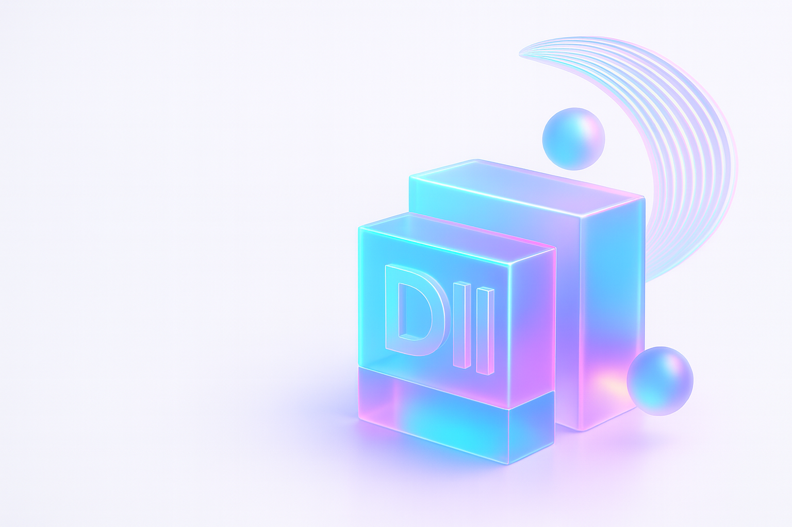

Empowering Businesses
Smart Innovation & Automation for Ambitious Teams
Dhruvi Infinity Inspiration Ltd. builds AI-powered SaaS that simplifies decisions, streamlines operations and scales reliably across the UK, US and Canada.

About DII
We’re a product studio focused on intelligent automation, clean UX, and dependable delivery. From small local services to enterprise operations, our software reduces manual workload, increases clarity, and lets teams focus on growth. Presence: UK, USA, Canada.
How we deliver
Products
Business Builder App
RotaFriend
Trainer Platform (in development)
Our Vision
Innovation with purpose. We design an ecosystem of SaaS products that quietly remove friction: smarter decisions, fewer clicks, faster outcomes. Automation where it matters; clarity everywhere.